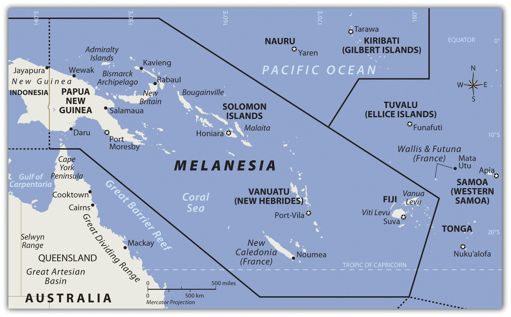
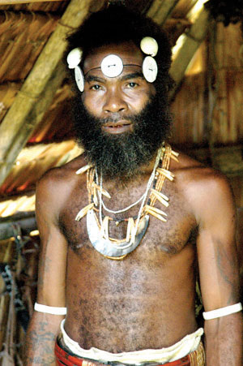
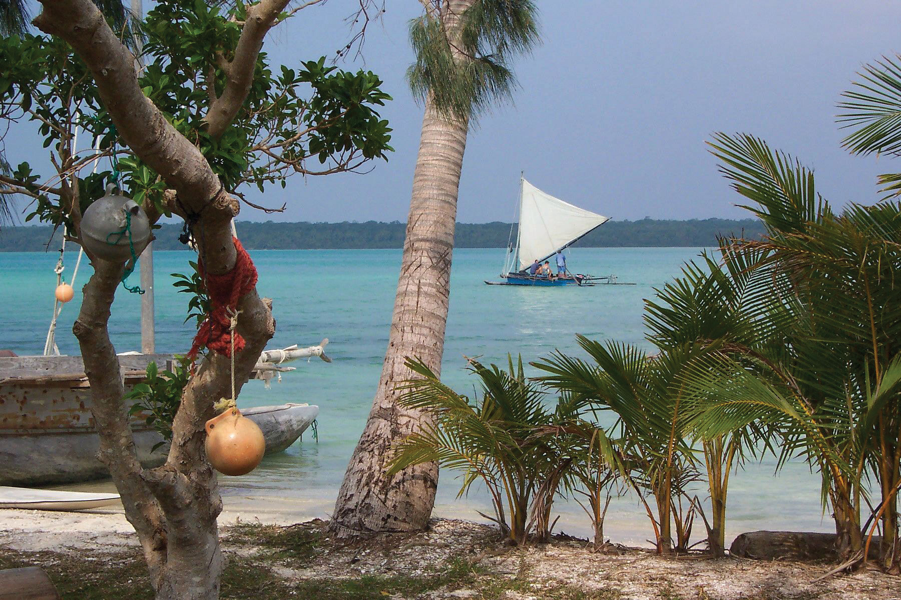
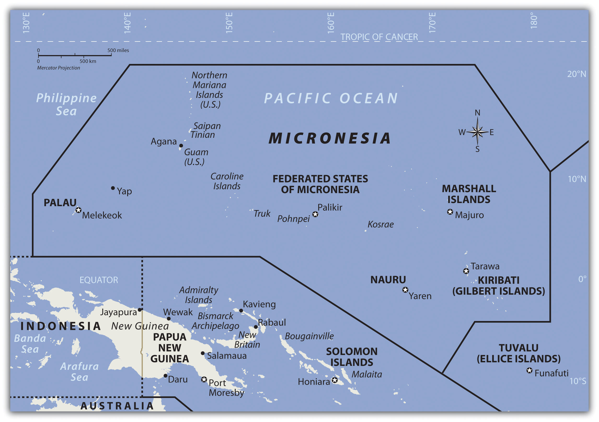
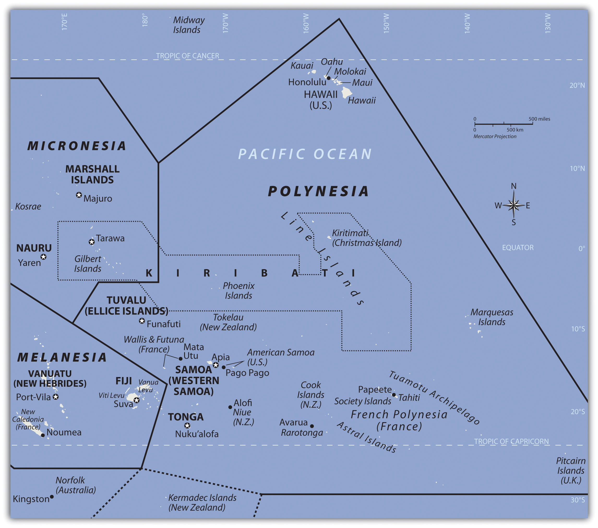
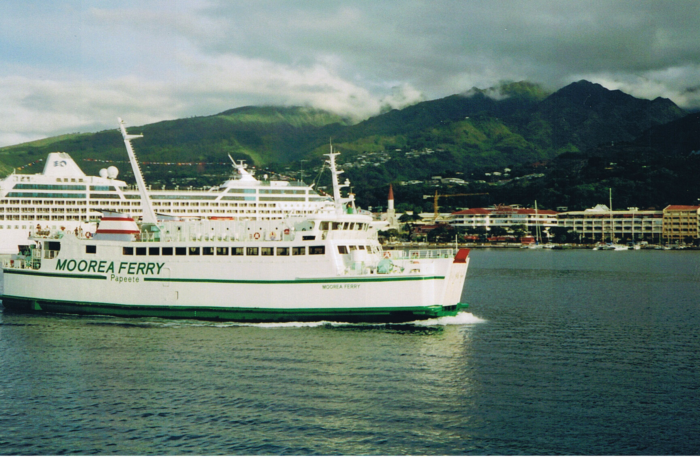
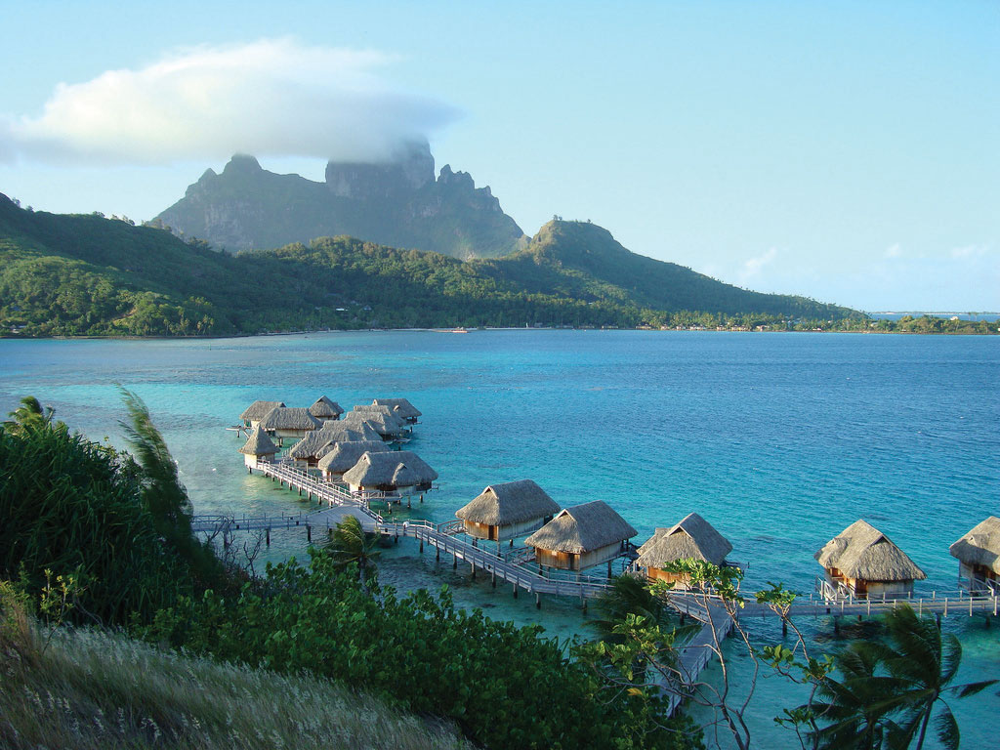

The Pacific realm is home to many islands and island groups. The largest island is New Guinea, which is home to most of the realm’s population. Many of the Pacific islands have become independent countries, while others remain under the auspices of their colonial controllers. The Pacific Theater of World War II was a battleground between the Japanese and American forces and had a large impact on the current conditions of many of the islands. The United States has been a major player in the post–World War II domination and control of various island groups. The Hawaiian Islands became the fiftieth US state in 1959.
The many islands can be divided into three main groups based on physical geography, local inhabitants, and location: Melanesia, Micronesia, and Polynesia. Indigenous cultural heritage remains strong in the South Pacific, but Western culture has made deep inroads into people’s lives. The globalization process bears heavily on the economic conditions that influence the cultural dynamics of the Pacific. Islands or island groups that remain under outside political jurisdiction are the most influenced by European or American cultural forces. Western trends in fast food, pop music, clothing styles, and social customs often dominate television, radio, and the cinema. Invasive Western cultural forces take the focus away from the traditional indigenous culture and heritage of the people who inhabited these isolated islands for centuries.
Traditionally, the islands were economically self-sufficient. Fishing and growing crops were the main economic activities, and nearby islands often established trade and exchanged natural resources. Fishing has been one of the most common ways of supporting the economy. There have been changes in the national boundaries to protect offshore fishing rights around each sovereign entity. Many waters have been overfished, consequently reducing the islands’ ability to provide food for their people or to gain national wealth. An increase in population and the introduction of modern technologies has brought about a dependency on the world’s core areas for economic support.
The Pacific is an extreme peripheral realm with little to offer to the core areas for economic exploitation. In recent decades, some national wealth has been gained from the mining of substances such as phosphates on a few of the islands. The main resources available are a pleasant climate, beautiful beaches, and tropical island terrain, all of which can be attractive to tourists and people from other places. Tourism is a growing sector of the service industry and a major means of gaining wealth for various island groups. To attract tourism, the islands must invest in the necessary infrastructure, such as airports, hotels, and supporting services. Long distances between islands and remote locations make tourism transportation expensive. Not every island has the funding to support these expenditures to draw tourists to their location.
The region of the Pacific north of Australia that borders Indonesia to the east is called Melanesia. The name originally referred to people with darker skin but does not adequately describe the region’s current ethnic diversity. The main island groups include Fiji, New Caledonia, Vanuatu, the Solomon Islands, and Papua New Guinea. All are independent countries except New Caledonia, which is under the French government. The island of New Guinea is shared between Papua New Guinea and Indonesia. Many islands on the eastern side of Indonesia share similar characteristics but are not generally included in the region of Melanesia.
Independent Countries of Melanesia
Other Island Groups
Figure 13.2 The Region of Melanesia
Papua New Guinea is the largest country in the Pacific realm and therefore the largest in Melanesia. It is diverse in both physical terrain and human geography. The high mountains of the interior reach 14,793 feet. Snow has been known to fall in the higher elevations even though they are located near the equator. Many local groups inhabit the island, and more than seven hundred separate languages are spoken, more than in any other country in the world. Indigenous traditions create strong centripetal forces. Many islands of Melanesia are recently independent of their European controllers; Papua New Guinea received independence in 1975 and is working toward fitting into the global community.
Papua New Guinea is a diverse country that still has many mysteries to be revealed in its little-explored interior. The country’s large physical area provides greater opportunities for the exploitation of natural resources for economic gain. The interior of the island has large areas that have not been exploited by large-scale development projects. In the past few decades, oil was discovered and makes up its largest export item. Gold, copper, silver, and other minerals are being extracted in extensive mining operations, often by outside multinational corporations. Subsistence agriculture is the main economic activity of most of the people. Coffee and cocoa are examples of agricultural exports.
A number of islands off Papua New Guinea’s eastern coast—including Bougainville—have valuable mineral deposits. Bougainville and the islands under its jurisdiction are physically a part of the Solomon Island archipelago but are politically an autonomous region of Papua New Guinea. Volcanic vents deep under the sea continue to bring hot magma and minerals to the surface of the ocean floor, creating valuable exploitable resources. Papua New Guinea has laid claim to these islands and the underwater resources within their maritime boundaries. Rebel movements have pushed for the independence of the Autonomous Region of Bougainville but have been unsuccessful. The islands remain under the government of Papua New Guinea.
To the east of the island of Guinea are the Solomon Islands, a group of more than one thousand islands. About eighty of them hold most of the population of more than a half a million. The island of Guadalcanal was the site of some of the fiercest fighting in World War II between Japan and the United States. Honiara, the capital city, is on Guadalcanal. The Solomon Islands were a colony of Great Britain but gained independence in 1978. Colonialism, World War II, and ethnic conflict on the islands created serious centrifugal cultural forces, divisions, and political tensions over the past few decades. In 2003, military and police troops from other islands and Australia intervened to restore order after ethnic tension erupted into civil unrest.
Figure 13.3 Malaitan Chief on the Solomon Islands
The heritage and history of these islands includes local cultures complete with isolated traditions and ethnic organization.
Source: Photo courtesy of Jim Lounsbury, http://en.wikipedia.org/wiki/File:Malaitan_Chief.jpg.
Shifting tectonic plates are the source of environmental problems. Active seismic activity has created earthquakes and tsunami conditions that have brought devastation to the region. An earthquake of 8.1 magnitude hit the Solomon Islands in 2007, bringing high waves and many aftershocks. The tsunami killed at least fifty-two people, and as many as one thousand homes were destroyed. The islands contain several active and dormant volcanoes. Tropical rain forests cover a number of the islands and are home to rare orchids and other organisms. There is concern that these resources might be harmed by deforestation and the exploitation of resources for economic gain.
Figure 13.4 Saint Joseph’s Bay on the Isles of Pines, New Caledonia
These remote islands have moderate climates and beautiful coastal settings. Many have been unduly romanticized by works of fiction. These islands are isolated and can lack resources; life can be more difficult than it is often portrayed.
Source: Photo courtesy of Bruno Menetrier, http://commons.wikimedia.org/wiki/File:Noum%C3%A9a_Ile_des_Pins_Saint_Joseph.JPG.
The country of Vanuatu was inhabited by a large number of South Pacific groups; as a result, many languages are spoken within a relatively small population. The French and the British both colonized the island archipelago. It was called the New Hebrides before independence in 1980, when the name was changed to Vanuatu. These small volcanic islands have an active volcano and have experienced earthquakes in recent years. One of Vanuatu’s means of bringing in business has been to establish offshore banking and financial services, similar to what is found in the Caribbean. Many shipping firms register their ships there because of the advantages of lower taxes and flexible labor laws.
New Caledonia is still a colony of France and was once a French prison colony. Under a current agreement, sovereignty is slowly being turned over to the local island government. Periodic reevaluations of the local government will be conducted to see if independence can be granted.
New Caledonia has historically relied on subsistence agriculture and fishing for its livelihood. About 25 percent of the world’s known nickel resources are located here. Nickel resources will substantially affect the economy, bring in foreign investments, and raise the standard of living.
Fiji is located in the eastern sector of Melanesia and has almost one million people. The country includes more than one hundred inhabitable islands, but two are home to most of the population. Colonialism heavily impacted the population’s ethnic makeup. During British colonial rule, thousands of workers from South Asia were brought in by the British to work on the sugar plantations. After a century of British rule, Fiji became independent in 1970. The people of South Asian descent remained in Fiji and now make up more than one-third of the population. Ethnic conflicts erupted on the political scene between the Melanesian majority and the South Asian minority. Political coups and coalition governments have attempted to work out political solutions with limited success. Fiji is quite well developed and has a substantial tourism industry that augments the other agricultural and mining activities.
North of the Solomon Islands and Papua New Guinea is the large region of Micronesia. The “micro” portion of the name refers to the fact that the islands are small in size—often only one square mile or so in physical area. The region has more than two thousand islands. Most of the islands are composed of coral and do not extend above sea level to any large extent. These low islandsIslands composed of coral that do not extend above sea level to any large extent. dominate the high islandsIslands usually of volcanic origin that can reach elevations in the thousands of feet.. The high islands are usually of volcanic origin and reach elevations in the thousands of feet.
The largest island in Micronesia is Guam. It is only 210 square miles in area and reaches an elevation of 1,335 feet at its highest point. Coral reefs surround Guam’s volcanic center. Guam is not an independent country but a US possession. The island was a strategic location during World War II, and the United States has major military installations located on the island.
Figure 13.5
Guam is a US possession. This photo shows the front of the University of Guam’s School of Nursing. The university has more than three thousand students and is accredited by the Western Association of Schools and Colleges in the United States.
Source: Photo courtesy of Guampedia Foundation, http://www.flickr.com/photos/guampedia/3992166430.
The Northern Mariana Islands are next to Guam and are current US possessions, along with Wake Island in the northeast. The US administers the United Nations Trust Territory of the Federated States of Micronesia. Implemented in 1986 and renewed again in 2004, the islands entered into the Compact of Free Association with the United States and established an independent status.
The independent island country of Nauru is only about eight square miles in physical area, but its large phosphate deposits created enormous wealth for its small population. Once the phosphates had been mined, however, there was little means to gain wealth on such a small island with a devastated landscape. Many on Nauru are trying to live off the investments from their mining wealth or have moved to find a livelihood elsewhere.
Independent Countries of Micronesia
Other Island Groups
Figure 13.6
The majority of islands in Micronesia are low islands composed of coral.
Palau, located in western Micronesia, has a population of about twenty thousand people and an area of about 177 square miles. Its early inhabitants included people from Asia and from the Pacific realm. British explorers arrived early on the island, but Spain dominated it during the colonial era. After losing the Spanish-American War, Spain sold the island to Germany, which implemented mining operations on the island. After its defeat in World War I, Germany lost the island to Japan. Japan used it as a strategic outpost but was defeated in World War II and had to give up all its external possessions. After 1945, Palau was held by the United States and the UN. In 1994, the island opted for independence and retained an agreement of free association with the United States. The United States has held strategic military installations on Palau and other islands in Micronesia. Palau’s economic and geopolitical dynamics are highly reflective of US activities in the region.
Marshall Islands, on the eastern side of Micronesia, experienced serious devastation from the conflict between Japan and the United States during World War II. The Marshall Islands became a testing ground for US nuclear weapons. Atomic bombs were tested on various atolls, rendering them uninhabitable. An atoll is a coral island that surrounds a lagoon. From 1946 to 1958, the United States conducted sixty-seven atmospheric nuclear tests in the Marshall Islands. The largest was known as the Bravo test, which included the detonation of a nuclear device over Bikini Atoll that was one thousand times more powerful than the atomic bomb dropped on Hiroshima during World War II. There are concerns about radioactive fallout that may still affect the people who inhabit nearby atolls. The Marshall Islands were granted independence in 1986 with an agreement with the United States to provide aid and protection in exchange for the use of US military bases on the islands.
The largest region of the Pacific is Polynesia, a land of many island groups with large distances between them. The root word poly means “many.” Numerous groups of islands have come together under separate political arrangements. The region includes the Hawaiian Islands in the north and the Pitcairn Islands and Easter Island to the east. New Zealand is now studied as a part of the Austral realm, but the Maori living there are originally from Polynesia. Polynesia has a mixture of island types ranging from the high mountains of Hawaii, which are more than 13,800 feet, to low-lying coral atolls that are only a few feet above sea level. Islands that have enough elevation to condense moisture from the clouds receive adequate precipitation, but many islands with low elevations have a shortage of fresh water, making habitation or human development difficult.
Polynesian culture stems from island resources. Fishing, farming, and an understanding of the seas created a way of life that gave Polynesia its identity. Polynesians created innovative maps that provided a means of sailing across large expanses of open seas to connect with distant islands. Their lifestyle revolved around natural resources and the creative use of natural materials. Polynesian art, music, and language reflect a diversity of cultural trends derived from a common heritage. The warm climate and beautiful islands contrast with violent destructive storms and a lack of fresh water or resources, which can make life difficult.
Figure 13.7
The region of Polynesia has island groups that are high islands with mountainous interiors.
Independent Countries of Polynesia
Main Island Possessions
French Polynesia (FR)
At the beginning of the twenty-first century, Polynesia only had four independent island groups: Kiribati, Samoa, Tonga, and Tuvalu. The rest of the many islands and island groups in Polynesia are claimed by or under the control or jurisdiction of other countries: mainly the United States, France, Great Britain, or New Zealand. Hawaii was a sovereign and independent kingdom from 1810 to 1893, when the monarchy was overthrown and the islands became a republic that was annexed as a US territory. Hawaii became the fiftieth US state in 1959. Hawaii’s development pattern is modern, based on tourism from the continental United States and the US military base on Pearl Harbor. According to the US Census, Hawaii had a population of 1.3 million in 2010. More than one-third of the people are of Asian descent, and at least 10 percent are native Hawaiians or Pacific Islanders. The United States has a number of additional possessions in Polynesia that include various small islands, atolls, or uninhabited reefs.
The Hawaiian Islands include more islands than the few usually listed in tourist brochures. Approximately 137 islands and atolls are in the Hawaiian chain, which extends about 1,500 miles. Hawaii is one of the most remote island groups in the Pacific. The islands of the Hawaiian archipelago are a product of volcanic activity from an undersea magma source called a hotspot, which remains stationary as the tectonic plate over it continues to shift creating new volcanoes. Mt. Kilauea, an active volcano on Hawaii, the largest island in the Hawaiian chain, is considered by geologists to be one of the most active volcanoes in the world. The active volcano of Mauna Loa and two dormant volcanoes, Mauna Kea and Hualālai, are on the same island. Mauna Kea is Hawaii’s tallest mountain at 13,796 feet above sea level, which is taller than Mt. Everest if measured from its base on the ocean floor.
Hawaii, like most islands of the Pacific realm, has a tropical type A climate, but snow can be found on the tops of its highest mountains during the winter months. The island of Kauai receives more than 460 inches of rain per year and is one of the wettest places on Earth. The rain shadow effect created by Mt. Wai’ale’ale is the reason for the high level of precipitation. All the rain falls on the windward side of the mountain, creating a rain shadow on the leeward side of the mountain, which is a semidesert.
Kiribati includes three sets of islands located in both Micronesia and Polynesia. The main component of Kiribati is the Gilbert Island chain in Micronesia, where the capital city and most of the population are located. The other two minor island chains are the Phoenix Islands and the Line Islands in Polynesia. Both island chains were US possessions before being annexed with the Gilbert Islands to become Kiribati. The Line Islands were used for testing of British hydrogen bombs starting in 1957. Three atmospheric nuclear tests were conducted by the British on Malden Island, and six were conducted on Christmas Island. There is concern about how radiation affected people present during the tests and thereafter. The Phoenix Islands have few inhabitants. In 2008, Kiribati declared the entire island group a protected environmental area, which made it the largest protected marine habitat in the world. Kiribati is the only country with land in all four hemispheres: north and south of the equator and on both sides of the 180° meridian.
After the colonial era, Samoa was divided into Western Samoa and Eastern Samoa. The United States controlled the eastern islands, which are referred to as American Samoa. Before World War I, Germany gained control of the larger, more extensive western islands only to lose them to New Zealand after the war. Western Samoa was under the New Zealand government until 1962, when it gained independence. The name was officially changed from Western Samoa to Samoa in 1997.
The Samoan Islands are volcanic, and the most active volcano last erupted in 1906. In Samoa, three-quarters of the nearly two hundred thousand people live on the larger of the two main islands. Colonialism has had a major impact on the culture, especially in the case of religion. Christianity became widespread once it was introduced and is now the religion of about 99 percent of the population. American music and societal trends are also a major influence on the islands because of migration between Hawaii and the US mainland. Many Samoans have moved to the United States and established communities. Cultural traditions have been preserved and are often integrated into modern society. Samoa has some of the oldest history and traditions of Polynesia. For many years, the United States has held an extensive naval station in the bay of Pago Pago on American Samoa. During World War II, there were more US military personnel on the islands than Samoans. American Samoa became a key military post for the United States. American Samoa remains a US possession; however, Samoans are not US citizens unless one of their parents is a US citizen.
South of Samoa is an archipelago that is home to the Kingdom of Tonga. Only about 36 of the 169 islands are inhabited by a total population of about one hundred twenty thousand people. Tonga is ruled by a monarchy that never lost its governance powers throughout the colonial era. Tonga is the only monarchy in the Pacific. The two main methods of gaining wealth are by remittances from citizens working abroad and tourism.
The island nation of Tuvalu comprises four reef islands and five atolls for a total land area of about ten square miles. In 2008, it had a population of about twelve thousand people. These statistics indicate that Tuvalu is one of the four smallest countries in the world. Nauru is only about eight square miles in area. Only the Vatican and Monaco are smaller. The low elevation of the islands of Tuvalu make them susceptible to damage from rising sea levels. The highest point is only fifteen feet in elevation. Any increase in ocean levels as a result of climate change could threaten the existence of this country.
The South Pacific is home to many islands and island groups that are not independent countries. The biggest and most significant group in the southern region is French Polynesia. France colonized a large number of islands in the South Pacific and has continued to hold them in its control or possession as external departments or colonies. In western Polynesia, the French maintain control over the islands of Wallis and Futuna. French Polynesia consists of four main island groups: the Society Islands, the Austral Islands, the Tuamotu Islands, and the Marquesas. There are around 130 islands in French Polynesia, and many are too small or lack resources to be inhabited.
Figure 13.8 The Moorea Ferry in Papeete Harbor, Tahiti
The only ways to get to the islands are by aircraft or by ship. Transportation costs can be high for imported goods or for tourism development.
Source: Photo courtesy of Evil Monkey, http://commons.wikimedia.org/wiki/File:Moorea_Ferry_in_Papeete_harbour.JPG.
Tahiti, located in the Society Islands, is the central hub of French Polynesia. Papeete is the capital and main city with a population of almost thirty thousand. Tahiti is a major tourist destination with a mild climate that stays at 75 °F to 85 °F year-round and receives adequate rainfall to sustain tropical forests. Most of the people live along the coastal areas; the interior is almost uninhabited. The Society Islands include the island of Bora Bora, which is considered by many to be a tropical paradise and one of the most exotic tourist destinations in the world.
Figure 13.9 Bora Bora in the Society Islands in French Polynesia with Mount Otemanu in the Background
Bora Bora is a world-class tourist destination catering to the international traveler.
Source: Photo courtesy of tensaibuta, http://www.flickr.com/photos/97657657@N00/2092792187.
The volcanic Marquesas Islands to the northeast are the second-most remote islands in the world after the Hawaiian Islands. The weather pattern in the Pacific does not bring enormous amounts of precipitation to the Marquesas, a reality that restricts human expansion in the archipelago. The higher elevations in the mountains—the highest is 4,035 feet—draw some precipitation from the rain shadow effect, giving rise to lush rain forests on portions of the islands. With less than ten thousand people, the Marquesas do not have a large population to support and rely on financial support from outside to sustain them. French painter Paul Gauguin is buried there, and the islands are remembered as his home during the last years of his life.
The Austral Islands are the southernmost group of islands in French Polynesia and are home to only about 6,500 people. French Polynesia also includes the Tuamotu Archipelago, between the Society Islands and the Marquesas, which comprises about 75 atolls and an uncounted number of coral reefs that extend for about nine hundred miles. The islands have a population of fewer than twenty thousand people, and the main economic activity is the cultivation of black pearls and coconuts.
The French government used islands in the Tuamotu Archipelago as test sites for nuclear weapons. From 1966 to 1974, the French tested 41 atomic devices above ground in the atmosphere, and from 1974 to 1996, they tested 137 atomic devices below ground. Radiation concerns are the same here as they are on the Marshall Islands, where the United States tested atomic weapons. Scientific testing monitored by the World Health Organization has determined the humans living closest to the atolls are not presently in danger of radioactive materials either in the environment or in their food supply. The long-term effects of the underground tests continue to be monitored.
To the east of French Polynesia are the four Pitcairn Islands, controlled by Great Britain. The main island, Pitcairn, is the only inhabited island in this chain and is one of the least inhabited islands in the world; the total population is fewer than fifty people. Mutineers from the HMS Bounty escaped to Pitcairn in 1790 after taking various Tahitians with them.
Even farther east than Pitcairn, on the edge of Polynesia, is Easter Island. Now under the government of Chile, Easter Island was historically inhabited by Polynesians who built large stone heads that remain somewhat of a mystery. At the center of Polynesia are the fifteen small Cook Islands, which are controlled by New Zealand and are home to about twenty thousand people, many of whom claim Maori ethnicity.
Identify the following key places on a map: